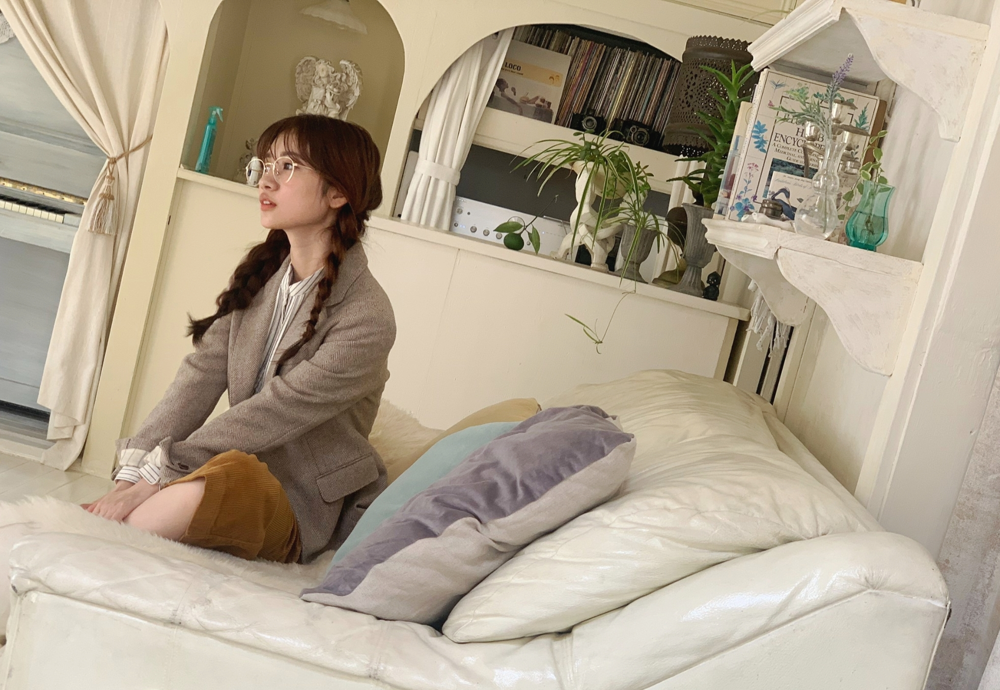

2020/0511Monhome
メガネ可愛いけど普段からはあまりかけなくて、、、
今年はメガネやサングラス沢山かけたいです。☺️
今日は夏を感じる暑さですね
サングラス必要なくらいの暑さです。☺️
こんなにカラッと晴れていますが
不要不急の外出はお控えくださいね。
早く皆でお外で自由に遊んだりしていた日々に一日も早く戻りますようにー。
去年はアクセサリーとかサングラス全然使わなかったから
今年は使いたいな！！！


久々に質問返しでもさせていただこうかなと思っております。☺️
このブログのコメントに質問ください。
いつも、コメントありがとうございます。
多くいただいた質問や
特に目に留まったもの気まぐれに
少しずつお返ししますね。☺️
2020/05/11 16:24
コメント(1284)
オススメのアニメはありますか？(これだけは特に観てほしい！っていう作品)
蘭世ちゃんブログ更新ありがとう！
初めてコメントします
次のブログ更新来たけど質問です…笑
蘭世ちゃんが普段メイクをするのが一番楽しい顔のパーツはどこですか？私は最近まつ毛をどれだけ綺麗に上げられるか、ということにハマっています。綺麗にくるんと上げられた日は自然とモチベーションが上がります
いろいろ大変な時期ですがお体に気をつけて下さい。
いつもモバメありがとう
初めてコメントします
次のブログ更新来たけど質問です…笑
蘭世ちゃんが普段メイクをするのが一番楽しい顔のパーツはどこですか？私は最近まつ毛をどれだけ綺麗に上げられるか、ということにハマっています。綺麗にくるんと上げられた日は自然とモチベーションが上がります
いろいろ大変な時期ですがお体に気をつけて下さい。
いつもモバメありがとう
らんぜブログありがとう！！
誰かとテレビ電話とかしてますか？？
誰かとテレビ電話とかしてますか？？
映画館で映画観るの好き？？
蘭世かわいい写真ありがとう！
＊質問＊
・女の子がしてて好きな髪型ってありますか？
（ちなみに私はポニーテール女子が大好きです！）
・蘭世のオススメの香水ってありますか？
・メイクで一番こだわってる(時間をかけてる)のはどこですか？やっぱり眉毛？？
・蘭世のスキンケアを教えてください！！
・毎日メイクを教えてください！
・今年の春着ようとしてた一押しの春服を見せてください！
蘭世に会えるような世の中に少しでも早く戻ってほしいですね…
蘭世大好き❤️
＊質問＊
・女の子がしてて好きな髪型ってありますか？
（ちなみに私はポニーテール女子が大好きです！）
・蘭世のオススメの香水ってありますか？
・メイクで一番こだわってる(時間をかけてる)のはどこですか？やっぱり眉毛？？
・蘭世のスキンケアを教えてください！！
・毎日メイクを教えてください！
・今年の春着ようとしてた一押しの春服を見せてください！
蘭世に会えるような世の中に少しでも早く戻ってほしいですね…
蘭世大好き❤️
東京事変で好きな曲３つ挙げて！
らんぜ
おはようございます
こんにちわ(..)
こんばんわ の時間
の時間
このタイミング・・・
いつも僕はタイミングが悪いッていうか
周りより動きがノロマなんだよね～
今日もナゴヤは暑かッたーー！
でもナゴヤッて
らんぜは何度も来てるから知ッてると思うケド
こんな程度の暑さじゃないんだよね、、、真夏は
メガネ・・・最近の僕は
コンタクトレンズからメガネ中心の生活に変わりました！
だから
らんぜよりちょッとだけ先に
メガネ生活をスタートさせてたんだよ
これ何の自慢？笑
それではそろそろ質問に入りたいと思います
おそいわーーーー
質問は１つに絞りました！！
これです！！！！
”らんぜが今一番欲しいものッて何ですか”
物でも無形のものでもOKです！
質問を読んで
「時間かけて、え？コレ？」
ッて思われそうだケド
これでも
すごーーくなやんだんだよ。。。
らんぜの知りたいコトッて
今もたくさんあッて
でもたくさん書くと読むのも大変だろうなッて
あと
意外とシンプルで基本的な質問ッて
今まであまりなかッたような気がして。
あまり自慢げに言うコトちゃうケドさ
知ッているようで意外に知らないコト
たくさんあるんだよねー、らんぜッてさ
でもそれがいいんだよね。
やッぱり
僕の周りと同じで
ミステリアスな部分をもッてる人には
興味をもッちゃうんだろうね
さてさて～
今日も少ししゃべりすぎてしまッたようだ。。。（）
すでにブログが更新されているみたいなので
また読んでからコメントするね。
じゃ今日は寝る！！！！
おやすみなさい
ばいちゃす☆彡
おはようございます
こんにちわ(..)
こんばんわ
このタイミング・・・
いつも僕はタイミングが悪いッていうか
周りより動きがノロマなんだよね～
今日もナゴヤは暑かッたーー！
でもナゴヤッて
らんぜは何度も来てるから知ッてると思うケド
こんな程度の暑さじゃないんだよね、、、真夏は
メガネ・・・最近の僕は
コンタクトレンズからメガネ中心の生活に変わりました！
だから
らんぜよりちょッとだけ先に
メガネ生活をスタートさせてたんだよ
これ何の自慢？笑
それではそろそろ質問に入りたいと思います
おそいわーーーー
質問は１つに絞りました！！
これです！！！！
”らんぜが今一番欲しいものッて何ですか”
物でも無形のものでもOKです！
質問を読んで
「時間かけて、え？コレ？」
ッて思われそうだケド
これでも
すごーーくなやんだんだよ。。。
らんぜの知りたいコトッて
今もたくさんあッて
でもたくさん書くと読むのも大変だろうなッて
あと
意外とシンプルで基本的な質問ッて
今まであまりなかッたような気がして。
あまり自慢げに言うコトちゃうケドさ
知ッているようで意外に知らないコト
たくさんあるんだよねー、らんぜッてさ
でもそれがいいんだよね。
やッぱり
僕の周りと同じで
ミステリアスな部分をもッてる人には
興味をもッちゃうんだろうね
さてさて～
今日も少ししゃべりすぎてしまッたようだ。。。（）
すでにブログが更新されているみたいなので
また読んでからコメントするね。
じゃ今日は寝る！！！！
おやすみなさい
ばいちゃす☆彡
僕にこれからの人生で自分を貫けるような座右の銘をください！！
自粛が解消されて最初にやりたいことは？
蘭世の機嫌をもし損ねてしまった時は、何をするのが一番有効でしょうか？
蘭世ちゃん更新ありがとう╰(*´︶`*)╯♡
いっきに夏がやって来ましたね(ﾟoﾟ;;
家にいても熱中症になっちゃうから体調には気を付けてね(*´꒳`*)
写真もありがとう！
メガネ似合ってますよ（╹◡╹）♡
いっきに夏がやって来ましたね(ﾟoﾟ;;
家にいても熱中症になっちゃうから体調には気を付けてね(*´꒳`*)
写真もありがとう！
メガネ似合ってますよ（╹◡╹）♡
お昼寝しちゃうんだけど、蘭世ちゃんはお昼寝する？
ブログ更新ありがとうございます！
蘭世さんがよく聴く邦楽を知りたいです♪
いつも応援してます！
蘭世さんがよく聴く邦楽を知りたいです♪
いつも応援してます！
更新ありがとうございます。
遅れましたが、質問させていただきます。
好きな音楽のジャンルはありますか？？
ちなみに、自分はHouseMusicが好きです。
是非聞いてみてください。
STEPHANIE COOCKのEverythingとかオススメです！
オススメ紹介しただけになりましたが、是非聞いてください（笑）
また、コメントしますね〜
またねー
遅れましたが、質問させていただきます。
好きな音楽のジャンルはありますか？？
ちなみに、自分はHouseMusicが好きです。
是非聞いてみてください。
STEPHANIE COOCKのEverythingとかオススメです！
オススメ紹介しただけになりましたが、是非聞いてください（笑）
また、コメントしますね〜
またねー
メガネかけてる人にどんな印象持つことが多いですか？
ってメガネかけてブログ読んでます。
ってメガネかけてブログ読んでます。
蘭世が自粛期間中1番連絡とってるの誰〜？
蘭世ちゃん、おはようございます！
質問ですー！
自粛期間が終わって旅行にいけるとしたら、どこにいきたいですかー？
国内でも海外でも、行きたいところがあったら教えてください！
日本に帰ってきて今大変な状況で夜更かしも出来るので久しぶりに工事中見れました！
設楽セレクションから始まり、自分が一番知っている時代がいっぱい放送されて
妙に懐かしくてうれりかったです！
蘭世さんも活躍されてましたね！？色々と爆笑。和田氏らにも爆笑！？
設楽セレクションから始まり、自分が一番知っている時代がいっぱい放送されて
妙に懐かしくてうれりかったです！
蘭世さんも活躍されてましたね！？色々と爆笑。和田氏らにも爆笑！？
遅いけど、質問あります。
蘭世ちゃんは前髪なしの髪型もやりませんですか。
私は蘭世ちゃんの前髪なしの髪型と赤いの髪色組み合わせが一番好き。
髪形の質問はまだ1つがある:
蘭世ちゃんはショートカット試してみませんか。
私は蘭世ちゃんのショートカット気になるです。
すごく似合うと思います。
蘭世ちゃんは前髪なしの髪型もやりませんですか。
私は蘭世ちゃんの前髪なしの髪型と赤いの髪色組み合わせが一番好き。
髪形の質問はまだ1つがある:
蘭世ちゃんはショートカット試してみませんか。
私は蘭世ちゃんのショートカット気になるです。
すごく似合うと思います。
蘭世ちゃんブログありがとう！
質問をしにきました〜
・私は梅が好きだけど、蘭世ちゃんは梅好きですか？
・連絡取ってる4期生はいますか？
・蘭世ちゃん的に1番仲のいい4期再は？
答えてくれるとうれしいな〜
のあᕱ⑅ᕱ
質問をしにきました〜
・私は梅が好きだけど、蘭世ちゃんは梅好きですか？
・連絡取ってる4期生はいますか？
・蘭世ちゃん的に1番仲のいい4期再は？
答えてくれるとうれしいな〜
のあᕱ⑅ᕱ
蘭世ちゃん、モバメたくさん送ってくれてありがとう！！
私も今、在宅でリモートでお仕事しています。今は比較的時間があるので、料理をたくさんしています。こんなときだからこそ、生活を充実させたいなと思います！
そんななかで蘭世ちゃんからのモバメが私に幸せをくれます！このお礼は、握手会ができるようになったらたくさん伝えたいです。それから蘭世ちゃんのプロデュースしたサコッシュがおしゃれ。とにかくおしゃれ。蘭世ちゃんのセンスが好き。
蘭世ちゃんも送ってくれたので...。I love you...♡
【質問】
・おすすめの日焼け止めはありますか？
・今気になっているコスメはありますか？
よかったら、教えてください。
私も今、在宅でリモートでお仕事しています。今は比較的時間があるので、料理をたくさんしています。こんなときだからこそ、生活を充実させたいなと思います！
そんななかで蘭世ちゃんからのモバメが私に幸せをくれます！このお礼は、握手会ができるようになったらたくさん伝えたいです。それから蘭世ちゃんのプロデュースしたサコッシュがおしゃれ。とにかくおしゃれ。蘭世ちゃんのセンスが好き。
蘭世ちゃんも送ってくれたので...。I love you...♡
【質問】
・おすすめの日焼け止めはありますか？
・今気になっているコスメはありますか？
よかったら、教えてください。
更新ありがとう〜！
好きなネイルのカラー知りたいです！！
好きなネイルのカラー知りたいです！！
蘭世さん元気ですかーーーーーー
久しぶりに黒髪蘭世さんが見たいのですがどうでしょうか
今大学1年になったんですがコロナの終わりが見えずバイトなど何も始まらずとても不安です。蘭世ちゃんは不安や緊張に押しつぶされそうな時どうやってほぐしたりしてますか？よければ教えてください
質問失礼します
大学に入学して握手会に行けるようになったのですがコロナが収まったら初めてなんですけどずっと行きたかったらんらんの握手会に1人で行ってもいいですか？
大学に入学して握手会に行けるようになったのですがコロナが収まったら初めてなんですけどずっと行きたかったらんらんの握手会に1人で行ってもいいですか？
蘭世さんに質問!!
蘭世さんの座右の銘ってなんですか？
蘭世さんの座右の銘ってなんですか？
そろそろ学校が再開するのですが、友達と仲良くできるか不安です……。応援のメッセージ欲しいです！
大阪の好きなところは？
久しぶりにコメントします！☺️
遅くなってしまいましたが質問です！！
高校の勉強が難しい、、のですが、、
集中力を高める方法や、保つ方法はありますか？？
遅くなってしまいましたが質問です！！
高校の勉強が難しい、、のですが、、
集中力を高める方法や、保つ方法はありますか？？
更新ありがとうございます！
最近蘭世のブログがたくさんあって嬉しい☺️
課題終わらないけど蘭世の写真とか見て頑張ってます！
最近蘭世のブログがたくさんあって嬉しい☺️
課題終わらないけど蘭世の写真とか見て頑張ってます！
蘭世さん髪色落ちてきて明るくなってましたね〜！
このまま明るくずっといくのはアリですか？
このまま明るくずっといくのはアリですか？
いつもブログ楽しみにして見てます。
質問募集との事ですので、お聞きします。
乙女座ですか？
天秤座ですか？
質問募集との事ですので、お聞きします。
乙女座ですか？
天秤座ですか？
最近蘭世ちゃんのブログのコメント数がすごく多くなってて嬉しいな(о´ω`о)


ブログ更新ありがとう
コメントしようと思っていたら、
新しいのが上がっていたので
質問だけ書くね。
髪ブリーチした？
蘭世のような色やりたいんだけど
なんと伝えればいいかな？